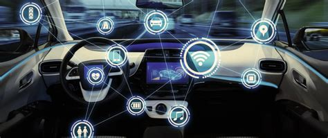

INFOTAINMENT FUTURE ANALYSIS // 2026
Vehicle infotainment is quickly moving toward becoming a much more integrated part of the automobile. Future systems are likely to rely heavily on artificial intelligence, cloud computing, and high-speed wireless communication, and display personalized advertising right in the car console. Natural-language voice interfaces may also make it possible for drivers to interact with the vehicle using ordinary conversation. Future displays are another area of development. Large, high-resolution screens are becoming increasingly common, and vehicles may incorporate augmented-reality displays that place navigation directions and advertising information directly into the driver's field of view. These screens could provide a significant marketing front setting the infotainment center as the most personalized billboard on the streets. There need not only be one screen also, as manufacturers are moving toward multi-display ecosystems with heads up displays directly on the windshield.

Infotainment is not just the hardware for automakers. These businesses consider it a continuous service platform, offering subscriptions for performance boosts, streaming apps, and feature unlocks. This avenue to pad the corporations' profit margins is destined to be thoroughly explored. However, these developments also create challenges. Increased connectivity creates cybersecurity and privacy concerns. Drivers can also become distracted if infotainment systems are poorly designed. Future systems will therefore necessarily need to balance convenience and entertainment with safety, simplicity, and responsible use of driver attention.